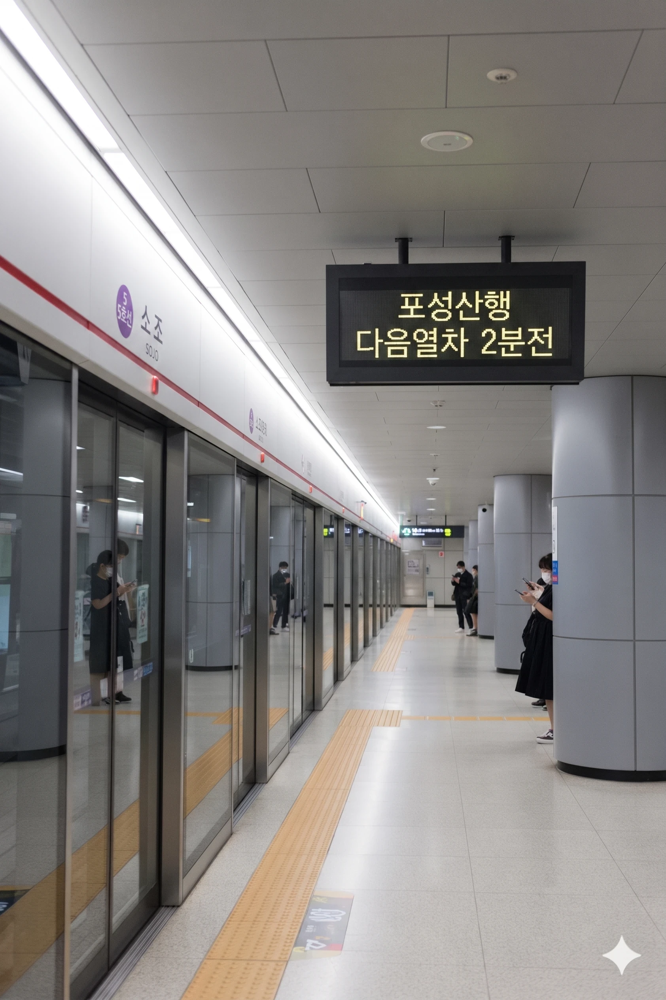

효빈 도시철도 5호선 505번, 창전선 C20번. 효빈광역시 북구 소조동 912 소재이다.
추후 창전선 2단계 구간이 개통되면 환승역이 될 예정이다. 5호선은 지하에 위치하고, 창전선은 지상(고가)에 승강장이 위치하여 수직 환승 구조를 띠게 될 예정이다.
효빈광역시 북구 소조동에 위치한 효빈 도시철도 5호선과 창전선의 환승역이다.
인근에 효빈대학교와 효빈교육대학교가 있어 대학생 이용객의 비중이 매우 높다. 특히 효빈대학교 사회과학대학, 사회복지학대학 등과는 도보로 5분 거리 내에 있어 사실상 캠퍼스 내 역이나 다름없는 접근성을 자랑한다. 창전선 개통 후에는 청엽구 및 동구 지역에서의 통학 수요까지 흡수하여 이용객이 더욱 증가할 것으로 전망된다.
역사 지하 1층에는 **효빈교통공사 공식 굿즈샵**이 입점해 있어 철도 동호인들의 발길이 끊이지 않는 곳이기도 하다.
|
5
C
소조역 출구 정보
|
||
|---|---|---|
| 번호 | 주요 시설 및 방향 | 비고 |
| 1 | 효빈대학교 사회과학대학, 언어문학대학 | |
| 2 | 효빈대학교 사회복지학대학, 사회과학대학 | |
| 3 | 소조센트럴시티아파트 | |
| 4 | 청능대현아파트 | |
| 5 | 효빈대학교 중앙도서관 | |
| 6 | 효빈대학교 세상관 | |
| 7 | 청능대현아파트 | |
| 8 | 효빈교육대학교 | |
| 9 | 소조동행정복지센터, 청능초등학교 | |
| 소조역 이용객 통계 | ||
|---|---|---|
| 연도 | 일평균 이용객 | 비고 |
| 2020년 | 12,534명 | |
| 2021년 | 12,675명 | |
| 2022년 | 19,851명 | |
| 2023년 | 21,199명 | |
| 2024년 | 21,123명 | |

| 당 선 ↑ | |||
| 하 | ㅣ | ㅣ | 상 |
| ↓ 고속버스터미널 | |||
| 상 | 5 효빈 도시철도 5호선 | 청덕공원 방면 |
| 하 | 5 효빈 도시철도 5호선 | 포성산 방면 |
※ 창전선 급행 열차는 이 역에 정차하지 않고 통과한다.
| 효빈대병원 ↑ | |||
| 상 | ㅣ | ㅣ | 하 |
| ↓ 청 능 | |||
| 상 | C 창전선 | 팔조 방면 |
| 하 | C 창전선 | 토모리해수욕장 방면 |
효빈광역시 시내버스 노선들이 주로 정차한다.
| 구분 | 정류소명 | 노선 번호 |
|---|---|---|
| 순방향 | 소조 | 19, 26, 10, 123, 143, 172, 261, 292, 6000, 6666, A02 |
| 역방향 | 소조(건너편) | 91, 62, 10-1, 213, 413, 712, 621, 922, 6000R, 6666R, A02R |